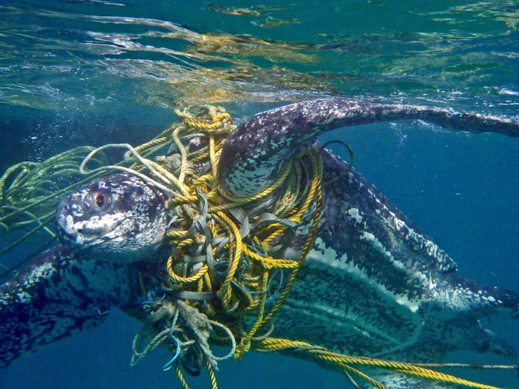
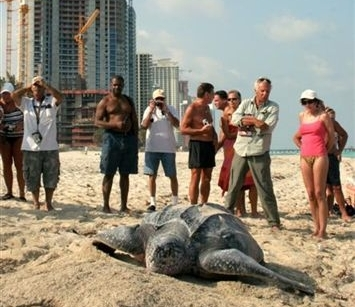
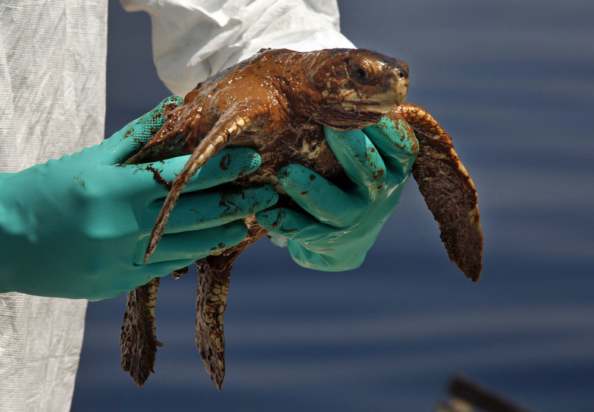
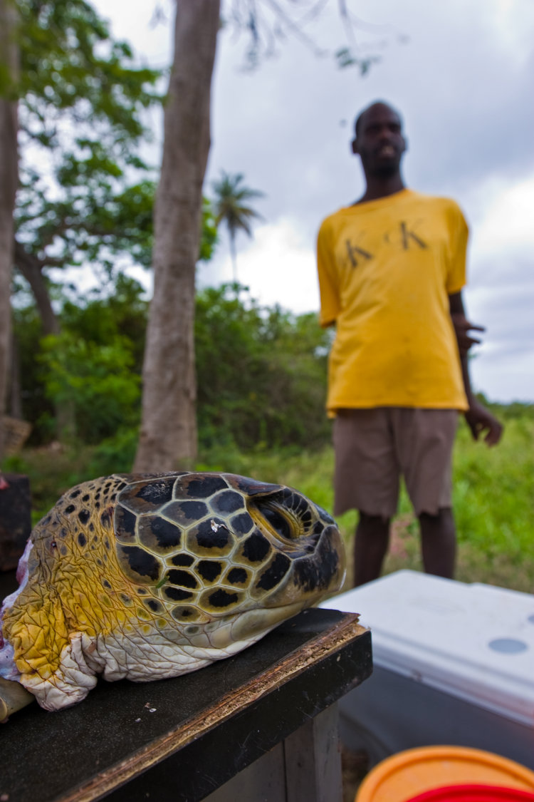
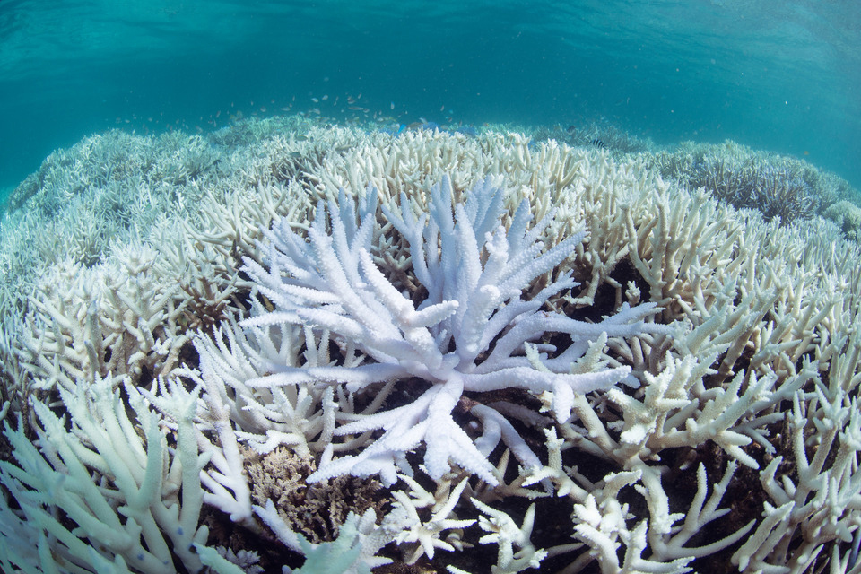

Why Are Sea Turtles Endangered? 5 Major Threats
FISHERIES BYCATCH
Thousands to tens of thousands of sea turtles are thought to perish each year as a result of the fishing business. Turtles caught in gill nets, trawls, and longlines are discarded as bycatch. Additionally, the disruption to their food supply and environment has an effect on those who are able to evade fishing nets.
EXPLORE NOWCOASTAL DEVELOPMENT
Because of receding coasts, sea turtle habitats are devastated every year. Sea turtle food sources and nesting areas are severely impacted anywhere there is boat vessel traffic, anytime a new hotel or high-rise is built up along the shore, and everywhere the sea floor is dug up and the beach erodes.
EXPLORE NOWPOLLUTION AND PATHOGENS
Sea turtles are harmed by marine pollution in a number of ways. Sea turtles are harmed by ingesting and being entangled in waste such as plastic trash, fishing gear left out to sea, petroleum byproducts, and other objects. The immune systems of the turtles may be weakened by ocean pollution, which may also interfere with nesting habits and hatchling orientation.
EXPLORE NOWDIRECT TAKE
Turtles are murdered all over the world and sold as unusual food, oil, leather, and jewelry on the international market. Millions of hawkbill turtles alone have been slaughtered over the past century only for the value of their shells. Even while efforts to promote conservation have resulted in a decline in the global trade in luxury and handicrafts, turtles continue to face danger in some regions of Africa, Asia, and the Americas.
EXPLORE NOWCLIMATE CHANGE
We are just now learning the extent to which climate change can affect sea turtles. Climate change can impact the natural sex ratios of hatchlings, increase the likelihood of disease outbreaks, and can escalate the frequency of extreme weather events, which destroy nesting beaches and coral reefs.
EXPLORE NOW.jpg)